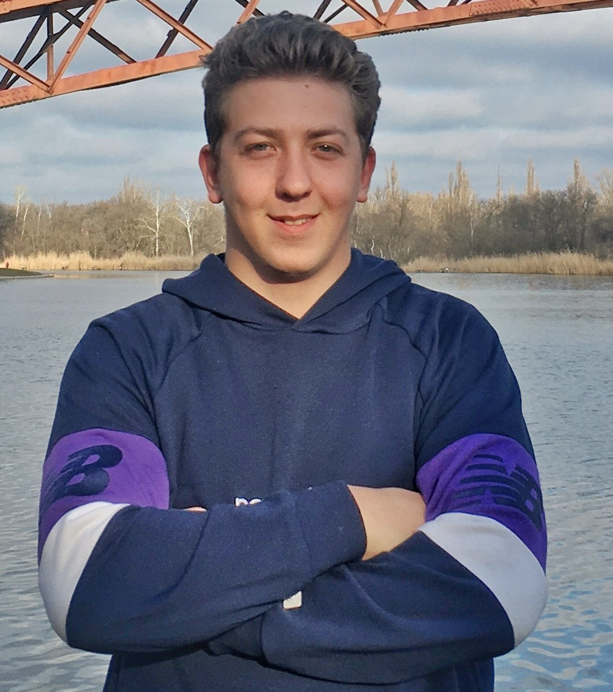

Oleksandr Bilokon

Agronomist
Education
- OSAU, faculy of Agriculture (Bachelor, 2019).
- Corporate Training Company "CTC", Business Simulation: Farm Management (2019).
Work experience
- 2018-2019 Agronomist at Farm Pan Bilan
- Growing vegetables, lettuces and greens, sweet cherries and peaches.
- 2020-2022 Agronomist-Consultant at Mas Seeds Ukraine
- Consulting of farms in the cultivation of corn and sunflower hybrids.
Skills
- Class B Driving License.
- Advancer PC user, Microsoft Word, Excel and many others.
- Excellent Communication skills.